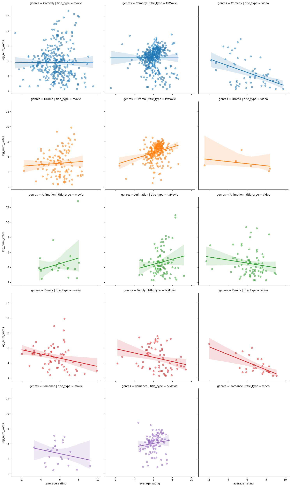

#Let's load up some data from IMDB so that we can take a look at it!
import pandas as pd
import seaborn as sns
import matplotlib.pyplot as plt
import numpy as np
#We are given two dataframes, one with the bulk of the data:
holiday_movies = pd.read_csv("https://bcdanl.github.io/data/holiday_movies.csv")
#And another with genres!
holiday_movie_genres = pd.read_csv("https://bcdanl.github.io/data/holiday_movie_genres.csv")holiday_movies.info()
#holiday_movies<class 'pandas.core.frame.DataFrame'>
RangeIndex: 2265 entries, 0 to 2264
Data columns (total 8 columns):
# Column Non-Null Count Dtype
--- ------ -------------- -----
0 tconst 2265 non-null object
1 title_type 2265 non-null object
2 primary_title 2265 non-null object
3 simple_title 2265 non-null object
4 year 2265 non-null int64
5 runtime_minutes 2076 non-null float64
6 average_rating 2265 non-null float64
7 num_votes 2265 non-null int64
dtypes: float64(2), int64(2), object(4)
memory usage: 141.7+ KB| tconst | title_type | primary_title | simple_title | year | runtime_minutes | average_rating | num_votes | |
|---|---|---|---|---|---|---|---|---|
| 0 | tt0020356 | movie | Sailor's Holiday | sailors holiday | 1929 | 58.0 | 5.4 | 55 |
| 1 | tt0020823 | movie | The Devil's Holiday | the devils holiday | 1930 | 80.0 | 6.0 | 242 |
| 2 | tt0020985 | movie | Holiday | holiday | 1930 | 91.0 | 6.3 | 638 |
| 3 | tt0021268 | movie | Holiday of St. Jorgen | holiday of st jorgen | 1930 | 83.0 | 7.4 | 256 |
| 4 | tt0021377 | movie | Sin Takes a Holiday | sin takes a holiday | 1930 | 81.0 | 6.1 | 740 |
| ... | ... | ... | ... | ... | ... | ... | ... | ... |
| 2260 | tt9747440 | tvMovie | A Christmas Love Story | a christmas love story | 2019 | 84.0 | 6.9 | 1652 |
| 2261 | tt9747450 | tvMovie | Holiday for Heroes | holiday for heroes | 2019 | 81.0 | 7.0 | 1655 |
| 2262 | tt9802890 | tvMovie | Christmas Jars | christmas jars | 2019 | 93.0 | 7.3 | 914 |
| 2263 | tt9815084 | tvMovie | A Very British Christmas | a very british christmas | 2019 | 90.0 | 5.7 | 725 |
| 2264 | tt9892854 | tvMovie | #Xmas | xmas | 2022 | 84.0 | 5.8 | 926 |
2265 rows × 8 columns
holiday_movie_genres.info() #From looking at this data, there is a common variable with tconst
#holiday_movie_genres<class 'pandas.core.frame.DataFrame'>
RangeIndex: 4531 entries, 0 to 4530
Data columns (total 2 columns):
# Column Non-Null Count Dtype
--- ------ -------------- -----
0 tconst 4531 non-null object
1 genres 4499 non-null object
dtypes: object(2)
memory usage: 70.9+ KB| tconst | genres | |
|---|---|---|
| 0 | tt0020356 | Comedy |
| 1 | tt0020823 | Drama |
| 2 | tt0020823 | Romance |
| 3 | tt0020985 | Comedy |
| 4 | tt0020985 | Drama |
| ... | ... | ... |
| 4526 | tt9815084 | Family |
| 4527 | tt9815084 | Romance |
| 4528 | tt9892854 | Comedy |
| 4529 | tt9892854 | Drama |
| 4530 | tt9892854 | Romance |
4531 rows × 2 columns
With this in mind, I am going to join these two tables using merge() with the proper ‘how’ function! (joining!)
hm_merged = pd.merge(holiday_movies, holiday_movie_genres, on='tconst', how='left')
hm_merged = hm_merged.drop_duplicates(['simple_title'], keep = 'first')Now that these two tables are joined, we can ask a few questions about the dataframe!
Let’s start with finding the proportions of the genres that we have just imported. (counting and indexing!)
genre_count = pd.DataFrame(hm_merged['genres'].value_counts().reset_index())
genre_count #the top 3 genres of holiday movies in terms of frequency are comedy, drama and romance| genres | count | |
|---|---|---|
| 0 | Comedy | 827 |
| 1 | Drama | 391 |
| 2 | Animation | 191 |
| 3 | Family | 157 |
| 4 | Romance | 126 |
| 5 | Adventure | 98 |
| 6 | Documentary | 89 |
| 7 | Horror | 31 |
| 8 | Action | 29 |
| 9 | Music | 26 |
| 10 | Musical | 20 |
| 11 | Crime | 15 |
| 12 | Fantasy | 13 |
| 13 | Short | 11 |
| 14 | Biography | 5 |
| 15 | Mystery | 3 |
| 16 | Western | 2 |
| 17 | Sci-Fi | 2 |
| 18 | Sport | 2 |
| 19 | Thriller | 2 |
| 20 | History | 1 |
| 21 | Talk-Show | 1 |
| 22 | Reality-TV | 1 |
Let’s also say that I was interested in a specific movie, and didn’t feel like using a filtering method to find it!
name_to_index = hm_merged.set_index(keys = ['simple_title'])
name_to_index.loc['christmas wedding baby'] #interesting! This is how I knew that I need to drop duplicates for accurate results!| christmas wedding baby | |
|---|---|
| tconst | tt3783740 |
| title_type | movie |
| primary_title | Christmas Wedding Baby |
| year | 2014 |
| runtime_minutes | 112.0 |
| average_rating | 6.0 |
| num_votes | 75 |
| genres | Comedy |
Now, one could be curious as to how the top 3 categories relate to one another in terms of ratings. I will use filtering methods and calculate the mean ratings of each.
comedy = hm_merged.query("genres == 'Comedy'")
drama = hm_merged.query("genres == 'Drama'")
romance = hm_merged.query("genres == 'Romance'")float(hm_merged['average_rating'].mean()) #returns 6.0566.075108538350217float(comedy['average_rating'].mean()) #returns 5.9145.878355501813784float(drama['average_rating'].mean()) #returns 6.0686.174680306905372float(romance['average_rating'].mean()) #returns 6.0356.020634920634919The average rating for all holiday movies in the list happens to be around 6.1. Comedies tended to rate lower than this, but not by much. This seems to be quite a complex dynamic, and next, I would like to explore the highest rated comedy films and the lowest ones.
descending_comedy = comedy.sort_values(['average_rating'], ascending = False)
descending_comedy[['simple_title', 'average_rating']]| simple_title | average_rating | |
|---|---|---|
| 3062 | christmas bone us | 9.8 |
| 3214 | cheap vs expensive xmas day | 9.5 |
| 2838 | aunty donna always room for christmas pud | 9.3 |
| 1089 | santa claus versus the christmas vixens | 9.1 |
| 4483 | holiday twist | 9.0 |
| ... | ... | ... |
| 4048 | how the wrong brothers saved christmas | 2.1 |
| 4222 | a feminist christmas carol | 1.8 |
| 4341 | a raunchy christmas story | 1.7 |
| 1874 | a christmas call | 1.5 |
| 3560 | kirk camerons saving christmas | 1.3 |
827 rows × 2 columns
ascending_comedy = comedy.sort_values(['average_rating'], ascending = True)
ascending_comedy[['simple_title', 'average_rating']]| simple_title | average_rating | |
|---|---|---|
| 3560 | kirk camerons saving christmas | 1.3 |
| 1874 | a christmas call | 1.5 |
| 4341 | a raunchy christmas story | 1.7 |
| 4222 | a feminist christmas carol | 1.8 |
| 4048 | how the wrong brothers saved christmas | 2.1 |
| ... | ... | ... |
| 4483 | holiday twist | 9.0 |
| 1089 | santa claus versus the christmas vixens | 9.1 |
| 2838 | aunty donna always room for christmas pud | 9.3 |
| 3214 | cheap vs expensive xmas day | 9.5 |
| 3062 | christmas bone us | 9.8 |
827 rows × 2 columns
Not surprisingly, there is quite a range of ratings for holiday movies that could also be considered comedies. They seem to range from an abysmal 1.3 to a fabulous 9.8. With all things considered, I’m surprised that I’ve never even heard of most of these highly acclaimed films/shows.
Approach 2: Data Visualization
Use pandas to select the five genres with the highest film counts.
Use numpy to add a new variable, log of num_votes.
Use seaborn to plot the relationship between log of num_votes and average_rating, grouping by genre and coloring or faceting by title_type.
genre_count = hm_merged.groupby('genres').agg(film_count = ('primary_title', 'count')).reset_index()
top_5 = genre_count.nlargest(5, 'film_count', keep = 'all')
top_5_genre = top_5['genres'].to_list()
top_5_genre #Comedy, Drama, Animation, Family, Romance
movies_top_5_genre = hm_merged[hm_merged['genres'].isin(top_5_genre)]
movies_top_5_genre #Here is the selected dataframe with the highest film counts!| tconst | title_type | primary_title | simple_title | year | runtime_minutes | average_rating | num_votes | genres | |
|---|---|---|---|---|---|---|---|---|---|
| 0 | tt0020356 | movie | Sailor's Holiday | sailors holiday | 1929 | 58.0 | 5.4 | 55 | Comedy |
| 1 | tt0020823 | movie | The Devil's Holiday | the devils holiday | 1930 | 80.0 | 6.0 | 242 | Drama |
| 3 | tt0020985 | movie | Holiday | holiday | 1930 | 91.0 | 6.3 | 638 | Comedy |
| 5 | tt0021268 | movie | Holiday of St. Jorgen | holiday of st jorgen | 1930 | 83.0 | 7.4 | 256 | Comedy |
| 6 | tt0021377 | movie | Sin Takes a Holiday | sin takes a holiday | 1930 | 81.0 | 6.1 | 740 | Comedy |
| ... | ... | ... | ... | ... | ... | ... | ... | ... | ... |
| 4520 | tt9747440 | tvMovie | A Christmas Love Story | a christmas love story | 2019 | 84.0 | 6.9 | 1652 | Drama |
| 4523 | tt9747450 | tvMovie | Holiday for Heroes | holiday for heroes | 2019 | 81.0 | 7.0 | 1655 | Romance |
| 4524 | tt9802890 | tvMovie | Christmas Jars | christmas jars | 2019 | 93.0 | 7.3 | 914 | Drama |
| 4525 | tt9815084 | tvMovie | A Very British Christmas | a very british christmas | 2019 | 90.0 | 5.7 | 725 | Comedy |
| 4528 | tt9892854 | tvMovie | #Xmas | xmas | 2022 | 84.0 | 5.8 | 926 | Comedy |
1692 rows × 9 columns
#Addition of log(num_votes) variable
movies_top_5_genre['log_num_votes'] = np.log(movies_top_5_genre['num_votes'])
movies_top_5_genreSettingWithCopyWarning:
A value is trying to be set on a copy of a slice from a DataFrame.
Try using .loc[row_indexer,col_indexer] = value instead
See the caveats in the documentation: https://pandas.pydata.org/pandas-docs/stable/user_guide/indexing.html#returning-a-view-versus-a-copy
movies_top_5_genre['log_num_votes'] = np.log(movies_top_5_genre['num_votes'])| tconst | title_type | primary_title | simple_title | year | runtime_minutes | average_rating | num_votes | genres | log_num_votes | |
|---|---|---|---|---|---|---|---|---|---|---|
| 0 | tt0020356 | movie | Sailor's Holiday | sailors holiday | 1929 | 58.0 | 5.4 | 55 | Comedy | 4.007333 |
| 1 | tt0020823 | movie | The Devil's Holiday | the devils holiday | 1930 | 80.0 | 6.0 | 242 | Drama | 5.488938 |
| 3 | tt0020985 | movie | Holiday | holiday | 1930 | 91.0 | 6.3 | 638 | Comedy | 6.458338 |
| 5 | tt0021268 | movie | Holiday of St. Jorgen | holiday of st jorgen | 1930 | 83.0 | 7.4 | 256 | Comedy | 5.545177 |
| 6 | tt0021377 | movie | Sin Takes a Holiday | sin takes a holiday | 1930 | 81.0 | 6.1 | 740 | Comedy | 6.606650 |
| ... | ... | ... | ... | ... | ... | ... | ... | ... | ... | ... |
| 4520 | tt9747440 | tvMovie | A Christmas Love Story | a christmas love story | 2019 | 84.0 | 6.9 | 1652 | Drama | 7.409742 |
| 4523 | tt9747450 | tvMovie | Holiday for Heroes | holiday for heroes | 2019 | 81.0 | 7.0 | 1655 | Romance | 7.411556 |
| 4524 | tt9802890 | tvMovie | Christmas Jars | christmas jars | 2019 | 93.0 | 7.3 | 914 | Drama | 6.817831 |
| 4525 | tt9815084 | tvMovie | A Very British Christmas | a very british christmas | 2019 | 90.0 | 5.7 | 725 | Comedy | 6.586172 |
| 4528 | tt9892854 | tvMovie | #Xmas | xmas | 2022 | 84.0 | 5.8 | 926 | Comedy | 6.830874 |
1692 rows × 10 columns
#Use of seaborn to plot the relationship between log_num_votes and average rating
sns.lmplot(data = movies_top_5_genre,
x = 'average_rating', y = 'log_num_votes',
hue = 'genres',
scatter_kws = {'alpha' : 0.5},
col = 'title_type',
row = 'genres')
There is certainly a lot of information to unpack from these graphs, but I will try my best to summarize it two or three sentences:
In a few instances, there seems to be more negative ratings corresponding to higher number of votes, which could point to a classic explanation in rating systems, where customers that are dissatisfied are more likely to complain, and therefore leave a bad review. The only clear graph with a positive relationship between the average rating and the number of ratings happens to be the tvMovie Holiday Dramas. Otherwise, there is often a negative (or no) correlation between the average rating of a movie/film/video and the logarithmic value of the number of votes.